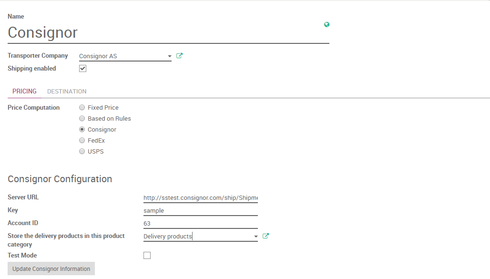

With Consignor for Odoo, you can now registre and print all your deliveries in ONE system.
Functionality
Consignor supports over 300 shipping companies in the nordic countries, of those aproximately 70 are located in Norway. You get access to all of their products and services. Consignor handles all of the messaging between you and the shipping company you choose.
To get started with Consignor & Consignor Shipment Server you must Contact Consignor to register an account if you do not have one yet.
Please contact their sales team here
After installation of the Consignor Module a new Delivery Method is created called Consignor.

When configuration is done.
Shipping suppliers and shipping products has been created in your system along with new delivery methods.